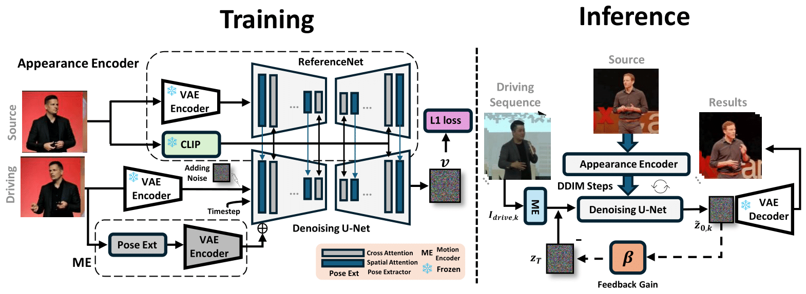
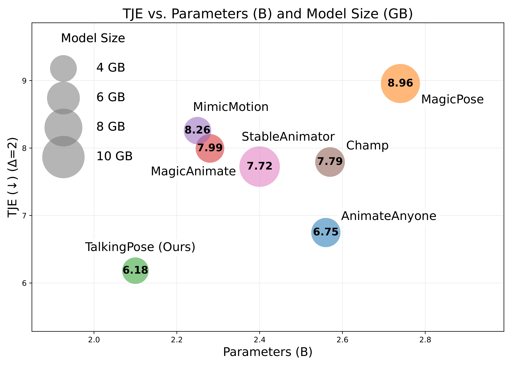
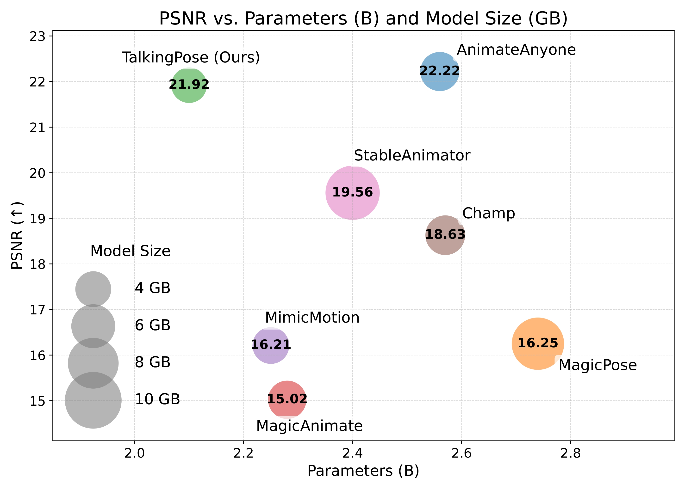

Recent advancements in diffusion models have significantly improved the realism and generalizability of character-driven animation, enabling the synthesis of high-quality motion from just a single RGB image and a set of driving poses. Nevertheless, generating temporally coherent long-form content remains challenging. Existing approaches are constrained by computational and memory limitations, as they are typically trained on short video segments, thus performing effectively only over limited frame lengths and hindering their potential for extended coherent generation. To address these constraints, we propose TalkingPose, a novel diffusion-based framework specifically designed for producing long-form, temporally consistent human upper-body animations. TalkingPose leverages driving frames to precisely capture expressive facial and hand movements, transferring these seamlessly to a target actor through a stable diffusion backbone. To ensure continuous motion and enhance temporal coherence, we introduce a feedback-driven mechanism built upon image-based diffusion models. Notably, this mechanism does not incur additional computational costs or require secondary training stages, enabling the generation of animations with unlimited duration. Additionally, we introduce a comprehensive, large-scale dataset to serve as a new benchmark for human upper-body animation.



@article{javanmardi2025talkingpose,
author = {Javanmardi, Alireza and Jaiswal, Pragati and Habtegebrial, Tewodros Amberbir
and Millerdurai, Christen and Wang, Shaoxiang and Pagani, Alain and Stricker, Didier},
title = {TalkingPose: Efficient Face and Gesture Animation with Feedback-guided Diffusion Model},
journal = {To appear},
year = {2025},
}This work has been partially funded by the EU projects CORTEX2 (GA: Nr 101070192) and LUMINOUS (GA: Nr 101135724).